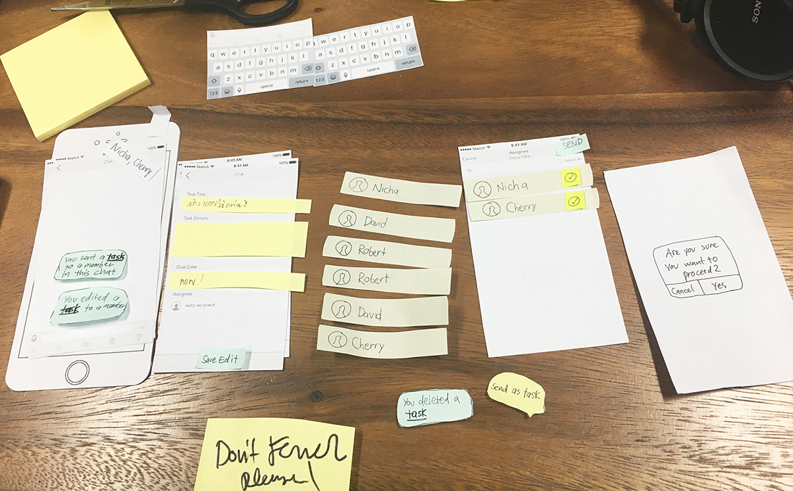

Dec 2016 - Feb 2017
This is a task management feature that allows companies to assign tasks quickly through their mobile devices. Users can easily send tasks to their colleagues via a dedicated task tab or within the chatrooms.
☻ ☻ ☻
Time was very limited for this project. We already had a set launch date before this feature was conceptualized.
What I wanted to know
What I did (with limited time)
What I found
What the team agreed to do
A UI designer and I conducted a mini collaborative workshop to get other people's opinions and get everyone aligned on the project. Using simple paper prototype, the team discussed different use cases and came up with an agreed model for the feature.
Collaborative workshop with paper prototype and a diagram from the dicussion
I conducted an internal usability test with 5 of my colleagues who had not seen or heard about this project. Using paper prototype, 3 tasks were given to each of them.

Paper prototype testing kit
Around 75% of the task were completed. I realized that there were many edge cases I still needed to consider. For example, what would happen if a person assigned a task to another person in a group chat and then edit the assignee to another person outside of that group chat, what would a person in that group see if they are not the assignee, who would get notified, etc.
To share the problems I found with the team, I made sure to also give them some suggestions of solutions to those problems.
A part of the testing result document
I wrote a “what if..” document to try to solve some of the unclear problems. This document was shared to the product team, designers, and the engineers. For some of the conflicted solutions, I created another spreadsheet document with pros and cons of each of the solutions, and got other people's input on them.
Sketches before high-resolution wireframes
I made grayscale wireframes because it's faster and easily for everyone to focus on the content rather than just the design. The UI designers can also come up with the final design with a fresher eye.
Some of the latest wireframes
The flow was being discussed daily with the UI designers and the engineers on what could be improved in terms of the design within the time limit. We also had to cut out a few features because of the time constrain. The ability to edit the task after it's sent, for instance.
The finalized flow got passed on to the UI designers to continue working on the layouts and aesthetics as well as being used for analytics integration. I was in charge of the product analytics. We use Mixpanel and Google Analytics. I assigned event points to the wireframes flow and made sure the engineers know exactly when to track each of them.
Flow with Mixpanel event tags
At this point, the product has been deployed internally for almost a month, and to a part of our client for a few weeks now. From data, the adoption rate from the client side is still very low.
We will make some adjustments to the feature with the internal feedback we got, and will improve the feature onboarding experience to increase the adoption rate on the client side.
- - - - - - - - - - - - - - - - - - - - - - -